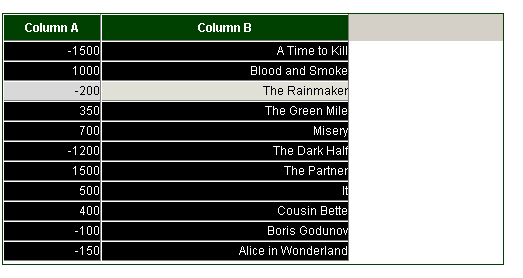

Creating custom skin for grid
Changing defaults
The look of the grid can be fully (or nearly fully) customized in CSS. dhtmlxgrid contains a set of CSS classes which define different aspects of the grid.
Most commonly-used styles
div.gridbox
grid container
div.gridbox table.hdr td
inner element of the header
div.gridbox table.hdr td div.hdrcell
outer element of the header
div.gridbox table.obj tr td
data cell
div.gridbox table.obj tr.rowselected td.cellselected, div.gridbox table.obj td.cellselected
element in a selected cell
div.gridbox table.obj tr.rowselected td
elements in a selected row
Footers
div.gridbox div.ftr
container of all footers
div.gridbox div.ftr td
footer element
Column moving
div.gridbox table.hdr td.columnTargetR div.hdrcell
marker used to mark drop-right in case of column moving
div.gridbox table.hdr td.columnTargetL div.hdrcell
marker used to mark drop-left in case of column moving
.dhx_dragColDiv
representation of the dragged column
Edit related styles
div.gridbox table.obj td.editable{
data cell in edit state
.dhx_combo_select
select boxes inside grid editors
.dhx_combo_edit
inputs inside grid editors
.dhx_textarea
textareas inside grid editors
.dhx_clist
checkbox list (clist excell)
D-n-D related styles
.dragSpanDiv
element used as drag text holder
.gridDragLine
marker of position during d-n-d (sibling and complex modes)
Rare used styles
.dhx_sub_row
sub row inside the grid
div.gridbox .xhdr
the space to the right of the last header (if grid width greater than the sum of column's widths)
div.gridbox table.row20px tr td
additional styles for data cell in case of fixed row height mode
div.gridbox .objbox
data part of grid
Skins
Skins customization
Each skin is actually a subset of default css class. For example, the following rules are defined in dhtmlxgrid.css for "xp" skin:
div.gridbox_xp
div.gridbox_xp .xhdr
div.gridbox_xp table.hdr td
As you can see the only difference is in "_xp" postfix which is the skin name. Thus, it will be "_modern" for "modern" skin, "_light" for "light" skin and etc.
So if you need to change the font for data cell in case of "xp" skin, you need to edit "div.gridbox_xp table.obj td" rule instead of "div.gridbox table.obj td".
The grid with defined skin will use all the default css rules and all skin related rules, so there is no need to write the same values again and again. Skin related styles contain info that differs from the default one.
Skin related css classes have two additional rules that can be set:
div.gridbox_xp .ev_xp
style will be applied to an even row
div.gridbox_xp .odd_xp
style will be applied to an odd row
The right part of the style name here is also based on the name of the used skin as it is described in the previous sample.
New skin creation
To create a new skin you should just create new css rules with necessary names. There is no need to do any code modifications to apply the new skin.
For example, we can add the following subset of rules:
div.gridbox_inverse {
border:1px solid #004000;
}
div.gridbox_inverse table.hdr td {
background-color:#004000;
color:white;
font-weight:bold;
}
div.gridbox_inverse table.obj td{
background-color:black;
color:white;
}
And later in js code we will use the following line:
grid.setSkin("inverse");
Our custom styles will be applied to the grid and as a result the grid will be displayed like this:

© DHTMLX, 2008